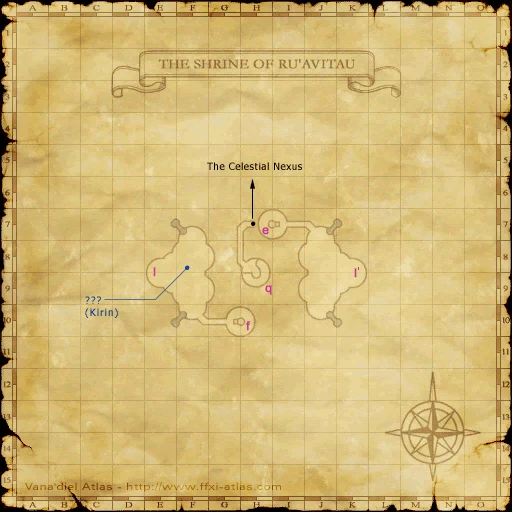
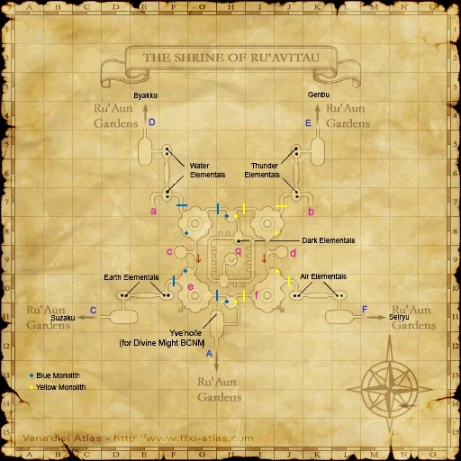
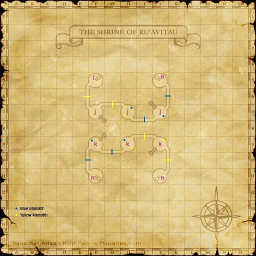
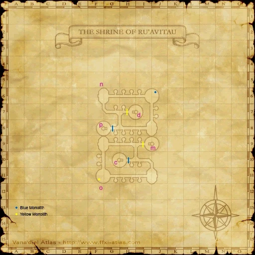
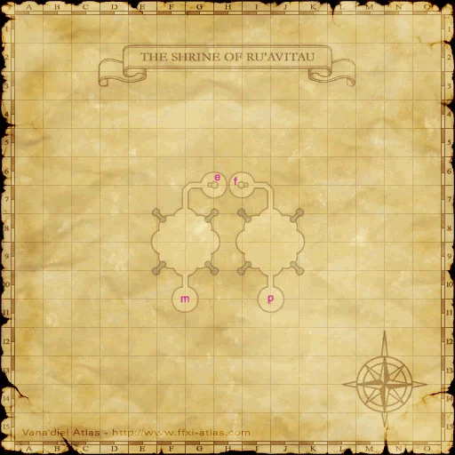

Before you begin
- Complete The Gate of the Gods.
- Read the shrine’s Blank Target scene before attempting the fights; native mission credit requires that flag.
Starting point
Blank Target · Shrine of Ru'Avitau · G/H-11
Walkthrough
- From Ru’Aun Gardens H-9, enter The Shrine of Ru’Avitau. Walk north to the Blank Target at G/H-11 and finish its scene.
- Return outside. Use each island’s red portal to reach a La’Loff Amphitheater entrance. Activate the blue pincerstone/portal when moving onward around the garden islands.
- Complete the five separate battlefields: Ark Angel HM, TT, MR, EV and GK. Each entrance leads to its corresponding Ark Angel, so visit all five.
- Check for all five shard key items after winning. The final shard advances the mission to The Sealed Shrine.
Battle and progress notes
- HM threatens Mijin Gakure; TT inflicts Petrification/Paralysis; MR can Charm; EV has dangerous Spirits Within; GK chains weaponskills. Prepare control and status cures.
- Divine Might is an optional alternative that fights all five simultaneously and can award the same mission credit. Its earring requires separately accepting that quest.
- The pinned native battlefield allows Trusts, up to six participants and 30 minutes, with the server maximum level as its cap. This is a code check, not a completed Zenith solo test.
Completion and reward
Shards of Apathy, Arrogance, Cowardice, Envy and Rage.
What this opens
Area maps
Open a zone below, then select a map to enlarge it. Match the named floors and grid coordinates in the steps; these are reference area maps, not a live position tracker.
Ru'Aun Gardens


Shrine of Ru'Avitau















Zone guides
References
- HorizonXI Wiki: Zilart Mission 14
- HorizonXI Wiki: Divine Might
- Reviewed mission implementation
- Reviewed mission implementation
- Reviewed mission implementation
- Reviewed mission implementation
- Reviewed mission implementation
- Reviewed mission implementation
Steps are an original summary of the linked walkthrough and reviewed source. Other servers’ bonus rewards are not included. How to read requirements, waits and battlefield notes.
Additional level-75 reference
|
Walkthrough
- Note
- Completing the quest Divine Might takes the place of this mission, and has additional rewards.
- To get to the Ark Angels, take the red portals. If you want to get to the different islands, activate pincer stones and take the blue portals. There is only magic aggro in this area except for the groundskeepers standing on a blue symbol.
- 6 people will be allowed to participate in the BCNM.
- 5 Ark Angels must be defeated one at a time. Each one has 2 jobs and uses abilities and 2 hour abilities from both jobs.
- They use normal Weapon Skills for their weapon as well as a unique weapon skill that only they can use.
- It has been reported that the AA can use the 2 hours more than once.
- Ark Angel TT: BLM + DRK, wielding a Scythe
- Uses Manafont and Blood Weapon
- Unique WS Amon Drive: AoE 100-300 damage plus Paralysis and Petrification, absorbed by Utsusemi
- Casts all BLM and DRK spells.
- Teleports around the circular battlefield
- Suggested Strategy - have mages stand on the stairs and just attack/heal from there as the AoE attack can be deadly to mages. Melee simply melee.
- Ark Angel MR THF + BST, wielding an Axe
- Uses Perfect Dodge and Charm.
- Unique WS Havoc Spiral: AoE 100-300 damage plus Sleep, absorbed by Utsusemi
- Summons a pet at start. This is usually a tiger, but can also be a black mandragora.
- Suggested Strategy - Sleep the pet and just focus on Ark Angel MR. Bring a backup tank for when your tank gets charmed, (you can get charmed even if the pet is still alive).
- Ark Angel HM NIN + WAR, wielding two Swords
- Uses Mighty Strikes. May or may not use Mijin Gakure.
- Unique WS Cross Reaver: Cone Attack 500-900 damage plus Stun.
- Mijin Gakure at high HP can kill everyone in range.
- Suggested Strategy - Mages stay at maximum casting range to avoid Mijin Gakure. Barfira and Earthen Ward melees to help them survive.
- Ark Angel EV PLD + WHM, wielding a Sword
- Uses Invincible and Benediction.
- Unique WS Dominion Slash: AoE 200-300 damage and Silence, absorbed by Utsusemi. Bring Echo Drops. Can also dispel buffs - keep an eye on Reraise.
- Also uses Shield Strike: Cone Attack ~100 damage and Stun
- Spirits Within at high HP can one-shot your tank.
- Suggested Strategy - Gravity and/or Bind the Ark Angel and kite to avoid Spirits Within.
- Ark Angel GK DRG + SAM, wielding a Great Katana
- Uses Call Wyvern and Meikyo Shisui multiple times.
- Unique WS Dragonfall: AoE 100-300 damage plus Bind, absorbed by Utsusemi.
- Suggested Strategy - Blinktank to avoid high damage from Meikyo Shisui
- Ark Angel TT: BLM + DRK, wielding a Scythe
Game Description
- Mission Orders
- Apathy, arrogance, cowardice, envy, rage--the darkness that lurks within us all...
Adapted from Eden Wiki: Ark Angels · Contributors and history · CC BY-SA 4.0. Revision 8952. Layout, links and optional background text adapted for Zenith.